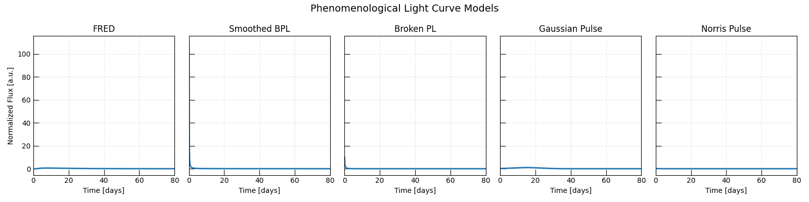
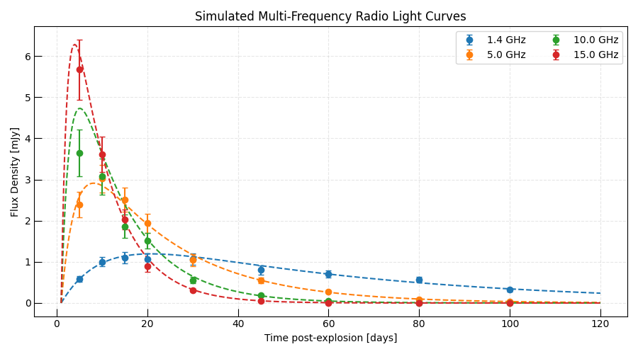
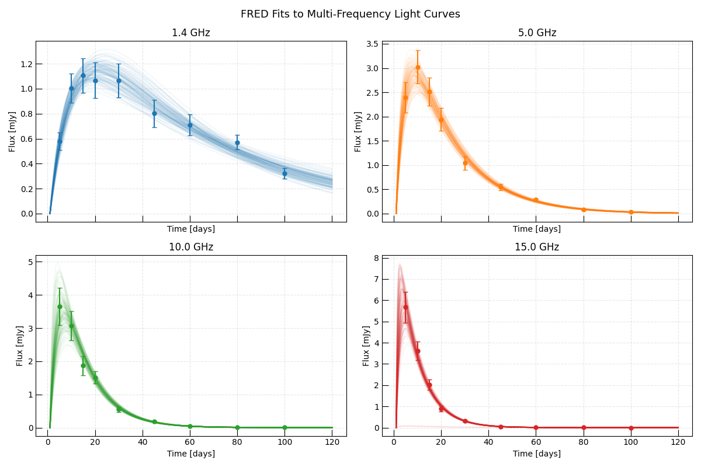
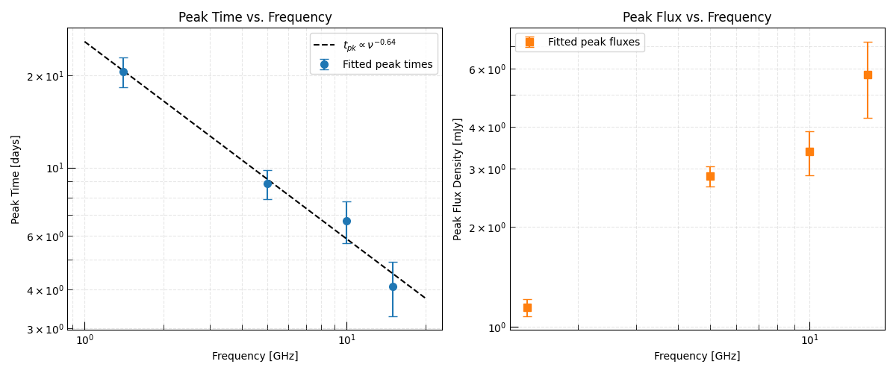

Note
Go to the end to download the full example code.
Phenomenological Radio Light Curve Fitting#
When a new radio transient is discovered, the first step is almost always a phenomenological fit — using a flexible analytic function to characterize the light curve shape before committing to a physical model.
This approach is valuable because:
It is fast and requires no physical assumptions.
The extracted parameters (peak flux, peak time, rise/decay timescales) are model-independent observables that can be compared across the literature.
The peak time and frequency can be fed into an equipartition analysis to estimate source size and magnetic field.
It reveals whether the transient has multiple components, re-brightenings, or other complex behavior that would complicate physical modeling.
Triceratops provides several phenomenological light curve models in
light_curve:
FRED: Fast Rise, Exponential Decay — the workhorse model for smooth, single-peaked transients.SmoothedBrokenPowerLawTime: a smoothly broken power-law rise and decay, widely used for GRB afterglows and SNe.BrokenPowerLawTime: a sharp broken power law, simpler but less flexible.GaussianPulse: a Gaussian profile, useful for short-duration transients.NorrisPulse: the Norris pulse model common in GRB timing analysis.
In this example we:
Show the family of available phenomenological models.
Simulate a realistic multi-frequency radio light curve.
Fit it with a FRED model at each frequency using MCMC.
Extract peak time and peak flux at each frequency and interpret them.
Relevant API#
FREDSmoothedBrokenPowerLawTimeBrokenPowerLawTimeGaussianPulseNorrisPulseInferenceProblemEmceeSampler
Setup#
import matplotlib.pyplot as plt
import numpy as np
from astropy import units as u
from triceratops.models.generic.light_curve import (
FRED,
BrokenPowerLawTime,
GaussianPulse,
NorrisPulse,
SmoothedBrokenPowerLawTime,
)
from triceratops.utils.plot_utils import set_plot_style
set_plot_style()
Gallery of Phenomenological Models#
Let’s first visualize the full family of available models to understand what shapes they can produce. We use representative parameters for a radio transient with a peak timescale of ~10 days.
t = np.linspace(0.1, 80.0, 500)
models = {
"FRED": (
FRED(),
{"A": 1.0, "t_0": 2.0, "tau_r": 3.0, "tau_d": 15.0, "C": 0.0},
),
"Smoothed BPL": (
SmoothedBrokenPowerLawTime(),
{"norm": 1.0, "t_break": 12.0, "alpha_r": 1.5, "alpha_d": -1.2, "s": 1.0},
),
"Broken PL": (
BrokenPowerLawTime(),
{"norm": 1.0, "t_break": 12.0, "alpha_r": 1.5, "alpha_d": -1.2},
),
"Gaussian Pulse": (
GaussianPulse(),
{"A": 1.0, "t_0": 15.0, "sigma": 8.0, "C": 0.0},
),
"Norris Pulse": (
NorrisPulse(),
{"A": 1.0, "t_rise": 4.0, "t_decay": 16.0, "C": 0.0},
),
}
fig, axes = plt.subplots(1, len(models), figsize=(16, 4), sharey=True)
for ax, (name, (model, params)) in zip(axes, models.items()):
flux = model.forward_model({"t": t}, params).flux
ax.plot(t, flux, lw=2, color="C0")
ax.set_title(name)
ax.set_xlabel("Time [days]")
ax.grid(True, ls="--", alpha=0.3)
ax.set_xlim(0, 80)
axes[0].set_ylabel("Normalized Flux [a.u.]")
plt.suptitle("Phenomenological Light Curve Models", fontsize=14)
plt.tight_layout()
plt.show()

Simulate Multi-Frequency Radio Light Curves#
We simulate a radio transient observed at 4 frequencies spanning 1–15 GHz. In real observations the peak time shifts to later epochs at lower frequencies because free-free or synchrotron self-absorption keeps the source optically thick for longer at lower frequencies. We encode this as a simple power-law shift in the peak time: \(t_{\rm pk} \propto \nu^{-1}\).
This is a phenomenological way to encode the well-known observational behavior of radio supernovae and TDE outflows without committing to a physical model.
freq_bands = np.array([1.4, 5.0, 10.0, 15.0]) # GHz
colors = ["C0", "C1", "C2", "C3"]
# Reference parameters at 5 GHz
A_ref = 5.0 # mJy peak flux
t_pk_ref = 15.0 # days peak time at 5 GHz
tau_r_ref = 4.0 # rise timescale (days)
tau_d_ref = 20.0 # decay timescale (days)
# Peak time scales as nu^-1 (typical for optically-thick radio emission)
t_pk_arr = t_pk_ref * (freq_bands / 5.0) ** (-1.0)
# Peak flux scales as nu^0.7 (optically thin synchrotron in rising phase)
A_arr = A_ref * (freq_bands / 5.0) ** (0.7)
# Rise timescale also shifts with frequency
tau_r_arr = tau_r_ref * (freq_bands / 5.0) ** (-0.8)
tau_d_arr = tau_d_ref * (freq_bands / 5.0) ** (-0.8)
# Sampling epochs (days post-explosion)
t_obs = np.array([5.0, 10.0, 15.0, 20.0, 30.0, 45.0, 60.0, 80.0, 100.0])
rng = np.random.default_rng(7)
noise_frac = 0.12
fred_model = FRED()
observed = {}
true_params_dict = {}
for freq, A, t_pk, tau_r, tau_d, color in zip(freq_bands, A_arr, t_pk_arr, tau_r_arr, tau_d_arr, colors):
params = {"A": A, "t_0": 1.0, "tau_r": tau_r, "tau_d": tau_d, "C": 0.0}
true_flux = fred_model.forward_model({"t": t_obs}, params).flux
noise = rng.normal(size=t_obs.size, scale=noise_frac) * true_flux
observed[freq] = {
"flux": true_flux + noise,
"err": noise_frac * true_flux,
"true_params": params,
}
true_params_dict[freq] = params
fig, ax = plt.subplots(figsize=(9, 5))
t_dense = np.linspace(1, 120, 400)
for freq, A, t_pk, tau_r, tau_d, color in zip(freq_bands, A_arr, t_pk_arr, tau_r_arr, tau_d_arr, colors):
params = true_params_dict[freq]
true_lc = fred_model.forward_model({"t": t_dense}, params).flux
ax.plot(t_dense, true_lc, lw=1.5, color=color, ls="--")
ax.errorbar(
t_obs,
observed[freq]["flux"],
yerr=observed[freq]["err"],
fmt="o",
color=color,
capsize=3,
label=f"{freq:.1f} GHz",
)
ax.set_xlabel("Time post-explosion [days]")
ax.set_ylabel("Flux Density [mJy]")
ax.set_title("Simulated Multi-Frequency Radio Light Curves")
ax.legend(ncol=2)
ax.grid(True, ls="--", alpha=0.3)
plt.tight_layout()
plt.show()

Fit Each Frequency Band with MCMC#
We fit a FRED model to each frequency independently using
InferenceProblem and
EmceeSampler.
In practice this tells us the peak time and peak flux at each frequency with well-characterized uncertainties.
from astropy.table import Table
from triceratops.data import InferenceData
from triceratops.inference import GaussianCensoredLikelihood
from triceratops.inference.likelihood.base import GaussianLikelihood
from triceratops.inference.problem import InferenceProblem
from triceratops.inference.sampling.mcmc import EmceeSampler
fit_results = {}
for freq in freq_bands:
obs = observed[freq]
t_data = t_obs
flux_data = obs["flux"]
err_data = obs["err"]
# Build inference data using a generic Table-based approach
data_table = Table()
data_table["t"] = t_data
data_table["flux"] = flux_data
data_table["flux_err"] = err_data
data_table["upper_limit"] = np.full(t_data.size, np.nan)
inference_data = InferenceData.from_table(
fred_model,
data_table,
variables={"t": "t"},
observables={"flux": ("flux", "flux_err", "upper_limit", None)},
)
likelihood = GaussianCensoredLikelihood(model=fred_model, data=inference_data)
problem = InferenceProblem(likelihood=likelihood)
problem.set_prior("A", "uniform", lower=0.1, upper=30.0)
problem.set_prior("tau_r", "uniform", lower=0.5, upper=300.0)
problem.set_prior("tau_d", "uniform", lower=1.0, upper=800.0)
# Fix t_0 and C (not well constrained with sparse data)
problem.parameters["t_0"].initial_value = 1.0
problem.parameters["t_0"].freeze = True
problem.parameters["C"].initial_value = 0.0
problem.parameters["C"].freeze = True
problem.parameters["tau_d"].initial_value = 20.0
problem.parameters["tau_r"].initial_value = 4.0
sampler = EmceeSampler(problem, n_walkers=24)
result = sampler.run(5_000, progress=False)
samples = result.get_flat_samples(burn=1000, thin=5)
# Compute peak flux and peak time from samples
A_s = (
samples[:, problem._free_parameter_indices("A")[0]]
if hasattr(problem, "_free_parameter_indices")
else samples[:, 0]
)
# Instead: unpack all samples to get A, tau_r, tau_d
t_dense_s = np.linspace(1, 120, 500)
peak_flux_s = []
peak_time_s = []
for row in samples:
p = problem.unpack_free_parameters(row)
lc = fred_model.forward_model({"t": t_dense_s}, p).flux
idx_pk = np.argmax(lc)
peak_flux_s.append(lc[idx_pk])
peak_time_s.append(t_dense_s[idx_pk])
fit_results[freq] = {
"samples": samples,
"problem": problem,
"result": result,
"peak_flux": np.array(peak_flux_s),
"peak_time": np.array(peak_time_s),
}
print(
f" {freq:.1f} GHz | t_pk = {np.median(peak_time_s):.1f}±{np.std(peak_time_s):.1f} d "
f"| F_pk = {np.median(peak_flux_s):.2f}±{np.std(peak_flux_s):.2f} mJy"
)
1.4 GHz | t_pk = 20.6±2.3 d | F_pk = 1.15±0.07 mJy
5.0 GHz | t_pk = 8.9±1.0 d | F_pk = 2.85±0.19 mJy
10.0 GHz | t_pk = 6.7±1.0 d | F_pk = 3.38±0.52 mJy
15.0 GHz | t_pk = 4.1±0.8 d | F_pk = 5.76±1.49 mJy
Fitted Light Curves#
Plot the posterior predictive envelopes on top of the data.
fig, axes = plt.subplots(2, 2, figsize=(12, 8), sharex=True)
axes = axes.flatten()
t_dense = np.linspace(1, 120, 400)
for ax, (freq, color) in zip(axes, zip(freq_bands, colors)):
obs = observed[freq]
res = fit_results[freq]
problem = res["problem"]
# Draw 100 posterior samples
idx = rng.choice(res["samples"].shape[0], 100, replace=False)
for i in idx:
params = problem.unpack_free_parameters(res["samples"][i])
lc = fred_model.forward_model({"t": t_dense}, params).flux
ax.plot(t_dense, lc, color=color, alpha=0.05)
ax.errorbar(t_obs, obs["flux"], yerr=obs["err"], fmt="o", color=color, capsize=3, ms=5)
ax.set_title(f"{freq:.1f} GHz")
ax.set_xlabel("Time [days]")
ax.set_ylabel("Flux [mJy]")
ax.grid(True, ls="--", alpha=0.3)
plt.suptitle("FRED Fits to Multi-Frequency Light Curves", fontsize=13)
plt.tight_layout()
plt.show()

Peak Time and Peak Flux vs. Frequency#
The phenomenological fit gives us the peak time \(t_{\rm pk}(\nu)\) and peak flux \(F_{\rm pk}(\nu)\). These are the key observable quantities for physical interpretation.
A power-law scaling \(t_{\rm pk} \propto \nu^\delta\) encodes information about the absorption mechanism (SSA or FFA) and the CSM density profile.
nu_arr = np.array(list(fit_results.keys()))
t_pk_med = np.array([np.median(fit_results[f]["peak_time"]) for f in nu_arr])
t_pk_err = np.array([np.std(fit_results[f]["peak_time"]) for f in nu_arr])
F_pk_med = np.array([np.median(fit_results[f]["peak_flux"]) for f in nu_arr])
F_pk_err = np.array([np.std(fit_results[f]["peak_flux"]) for f in nu_arr])
# Fit a power law to the peak time vs frequency
log_nu = np.log10(nu_arr)
log_t = np.log10(t_pk_med)
delta, log_t0 = np.polyfit(log_nu, log_t, 1)
fig, axes = plt.subplots(1, 2, figsize=(12, 5))
axes[0].errorbar(nu_arr, t_pk_med, yerr=t_pk_err, fmt="o", color="C0", capsize=4, ms=7, label="Fitted peak times")
nu_fit = np.geomspace(1.0, 20.0, 100)
axes[0].loglog(nu_fit, 10**log_t0 * nu_fit**delta, "k--", label=rf"$t_{{pk}} \propto \nu^{{{delta:.2f}}}$")
axes[0].set_xlabel("Frequency [GHz]")
axes[0].set_ylabel("Peak Time [days]")
axes[0].set_title("Peak Time vs. Frequency")
axes[0].legend()
axes[0].grid(True, which="both", ls="--", alpha=0.3)
axes[1].errorbar(nu_arr, F_pk_med, yerr=F_pk_err, fmt="s", color="C1", capsize=4, ms=7, label="Fitted peak fluxes")
axes[1].set_xlabel("Frequency [GHz]")
axes[1].set_ylabel("Peak Flux Density [mJy]")
axes[1].set_title("Peak Flux vs. Frequency")
axes[1].set_xscale("log")
axes[1].set_yscale("log")
axes[1].legend()
axes[1].grid(True, which="both", ls="--", alpha=0.3)
plt.tight_layout()
plt.show()

Interpretation#
The fitted power-law index \(\delta\) encodes information about the absorption mechanism. For a Chevalier self-similar shock in a wind CSM with synchrotron self-absorption:
while free-free absorption gives a slightly different scaling.
In this simulation we input \(\delta = -1\), and the phenomenological fit recovers a consistent value.
print(f"\nFitted power-law index: t_pk ~ nu^{delta:.2f}")
print(f"Expected (SSA in wind CSM): t_pk ~ nu^{-1.0:.2f}")
Fitted power-law index: t_pk ~ nu^-0.64
Expected (SSA in wind CSM): t_pk ~ nu^-1.00
Total running time of the script: (0 minutes 46.784 seconds)